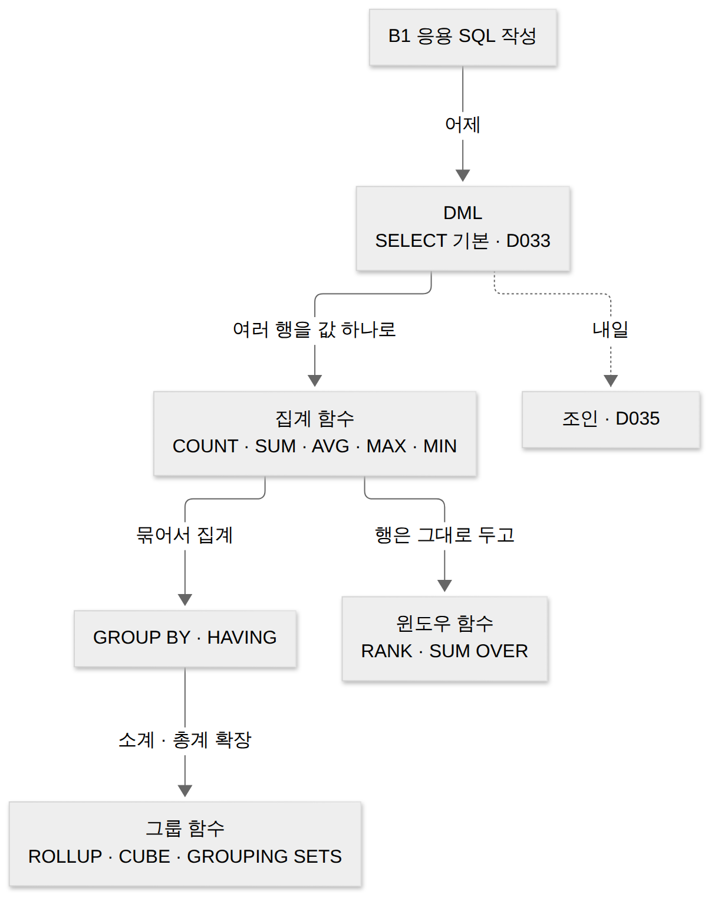
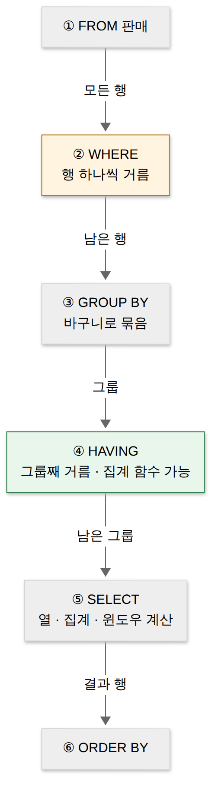
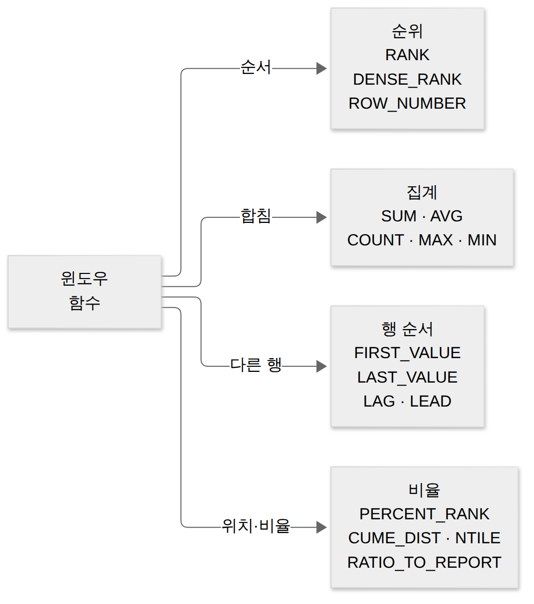
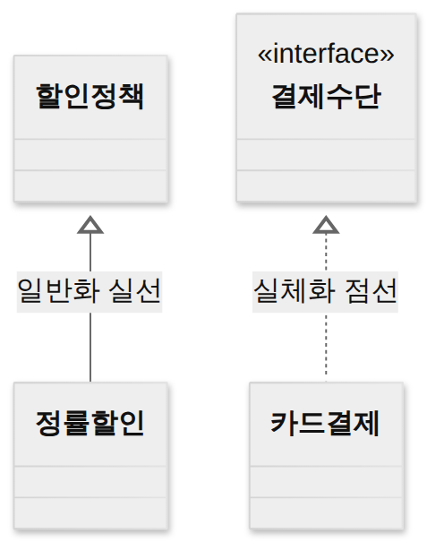

D034 · 그룹 함수·윈도우 함수: 집계, GROUP BY와 HAVING, ROLLUP · CUBE · GROUPING SETS, RANK 계열
B1 어제 D033에서는 SELECT로 행을 고르고 거르는 법을 봤어요. 그런데 본사가 궁금한 건 영수증 한 장 한 장이 아니라 “지점별로 몇 그릇 팔렸나”, “어느 메뉴가 1등인가” 같은 숫자 몇 개예요. 오늘은 여러 행을 모아 값을 만드는 두 가지 방법, 행을 접는 그룹 함수와 행을 그대로 두는 윈도우 함수를 봐요. 예시는 분식 체인 ‘떡상분식’ 본사의 하루 판매 기록 하나로 끝까지 가요.
- 집계 함수와 GROUP BY·HAVING으로 결과를 구하고, WHERE와 HAVING이 거르는 대상을 구별할 수 있다
- COUNT(*)·COUNT(열)·COUNT(DISTINCT 열)과 AVG의 NULL 처리 차이를 구별할 수 있다
- ROLLUP·CUBE·GROUPING SETS가 만드는 소계·총계 행의 구성과 개수를 셀 수 있다
- RANK·DENSE_RANK·ROW_NUMBER와 PARTITION BY 결과를 손으로 풀고, 윈도우 함수가 행을 줄이지 않는다는 점을 설명할 수 있다
1. 큰 그림 — 접을 것인가, 옆에 적을 것인가
어제까지의 SELECT는 행을 고르기만 했어요. 결과 한 줄은 원래 테이블의 한 줄이었죠. 하지만 정산은 다릅니다. 본사 회의 자료에 영수증 여섯 장을 붙여 놓으면 아무도 안 읽어요. “오늘 총 140그릇, 강남 60·홍대 80”처럼 여러 행을 숫자 하나로 모아야 해요. 이렇게 여러 행을 입력받아 값 하나를 돌려주는 함수가 집계 함수예요.
그런데 모으는 방식에는 두 갈래가 있어요. 집계 함수는 영수증 여섯 장을 ‘합계 140그릇’ 한 줄로 접는 정산 담당자고, 윈도우 함수는 영수증은 그대로 두고 장마다 옆에 형광펜으로 ‘지점 합계 60’을 적어 주는 꼼꼼한 총무예요. 앞쪽이 GROUP BY와 그룹 함수(ROLLUP·CUBE·GROUPING SETS)의 세계이고, 뒤쪽이 윈도우 함수(RANK, SUM() OVER 등)의 세계예요.

오늘 내내 쓸 판매 테이블이에요. 지점 두 곳, 메뉴 세 가지, 여섯 건이에요. 별점은 손님이 남긴 경우만 있어서 두 칸이 NULL이에요. 어제 NULL이 비교에서 말썽을 부렸다면, 오늘은 세기와 평균에서 말썽을 부려요.
| 번호 | 지점 | 메뉴 | 수량 | 별점 |
|---|---|---|---|---|
| 1 | 강남 | 떡볶이 | 30 | 5 |
| 2 | 강남 | 김밥 | 20 | 4 |
| 3 | 강남 | 떡볶이 | 10 | NULL |
| 4 | 홍대 | 떡볶이 | 20 | 4 |
| 5 | 홍대 | 김밥 | 20 | NULL |
| 6 | 홍대 | 순대 | 40 | 5 |
위 표 하나로 두 세계를 비교하면 아래 그림이 돼요. 같은 “지점 합계”를 구해도 GROUP BY는 결과가 2행, 윈도우 함수는 6행이에요.
본문에 반복해서 나오는 용어를 먼저 정리해 둘게요.
| 용어 | 뜻 | 떡상분식 예 |
|---|---|---|
| 집계 함수 | 여러 행의 값을 모아 값 하나를 돌려주는 함수 | SUM(수량) = 140 |
| 그룹 | GROUP BY 열의 값이 같은 행들의 묶음 | 강남 3행, 홍대 3행 |
| 소계 · 총계 | 일부 열을 접어 한 단계 위에서 다시 낸 합계 · 전부 접은 합계 | 강남 60 · 전체 140 |
| 그룹 함수 | GROUP BY를 확장해 소계·총계 행을 함께 만드는 기능 | ROLLUP · CUBE · GROUPING SETS |
| 윈도우(창) | 현재 행과 함께 계산에 쓰는 행들의 범위 | “같은 지점의 행들” |
| 파티션 | 윈도우를 나누는 칸막이(PARTITION BY) | 메뉴별 칸 |
→ 이 장면의 결과물: 두 세계의 지도와 판매 표. 그래서 다음 장면은 두 세계가 공통으로 쓰는 재료, 집계 함수 다섯 개부터 봐요.
2. 장면 1 — 집계 함수 다섯 개와 NULL
집계 함수가 필요한 이유는 앞에서 봤어요. 이제 하나씩 볼게요. 다섯 개 모두 “여러 행 → 값 하나”라는 점은 같고, 무엇을 돌려주느냐만 달라요. GROUP BY 없이 쓰면 테이블 전체가 한 그룹이 되어 결과는 딱 한 행이에요.
COUNT는 개수를 세요. 괄호 안에 무엇을 넣느냐에 따라 세는 대상이 바뀌어서 시험에 가장 자주 나와요. SUM은 합계, AVG는 평균이라 숫자 열에만 써요. MAX·MIN은 가장 큰 값·작은 값이라 숫자뿐 아니라 문자·날짜 열에도 쓸 수 있어요. 예를 들어 MAX(메뉴)는 가나다순으로 가장 뒤인 ‘순대’예요.
COUNT 세 가지
COUNT(*)는 행이 있으면 무조건 세요. 칸 안에 무엇이 들었는지 보지 않으니 NULL도 셉니다. COUNT(열)은 그 열 값이 NULL이 아닌 행만 세요. COUNT(DISTINCT 열)은 NULL을 뺀 뒤 서로 다른 값의 가짓수를 세요. COUNT(*)는 식탁에 놓인 의자 수를 세고, COUNT(별점)은 실제로 앉아서 별점을 남긴 손님만 세요. 빈 의자(NULL)는 의자로는 치지만 손님으로는 안 쳐요.
AVG의 분모
AVG는 “NULL을 뺀 값들의 합 ÷ NULL을 뺀 값의 개수”예요. 별점 합은 5+4+4+5 = 18이고, 값이 있는 칸은 4개라 평균은 4.5예요. NULL을 0점으로 쳐서 6으로 나누면 3이 나오는데, 이건 SQL이 하는 계산이 아니에요. 출제자는 NULL 두 칸을 일부러 섞어 놓고 ‘6으로 나눴나, 4로 나눴나’만 봐요. 선지에 4.5와 3이 나란히 서 있으면 바로 그 문제예요.
SELECT COUNT(*), COUNT(별점), COUNT(DISTINCT 메뉴),
SUM(수량), AVG(별점), MAX(수량), MIN(수량)
FROM 판매;| COUNT(*) | COUNT(별점) | COUNT(DISTINCT 메뉴) | SUM(수량) | AVG(별점) | MAX | MIN |
|---|---|---|---|---|---|---|
| 6 | 4 | 3 | 140 | 4.5 | 40 | 10 |
한 장 요약 — 다섯 함수와 NULL 처리예요.
| 함수 | 하는 일 · NULL 처리 | 판매 예 |
|---|---|---|
| COUNT(*) | 행 수. NULL이 든 행도 셈 | 6 |
| COUNT(열) | 그 열이 NULL 아닌 행 수 | COUNT(별점) = 4 |
| COUNT(DISTINCT 열) | NULL 뺀 서로 다른 값 수 | COUNT(DISTINCT 메뉴) = 3 |
| SUM · AVG | 숫자 열의 합 · 평균. NULL 제외(AVG 분모도 제외) | 140 · AVG(별점) 4.5 |
| MAX · MIN | 가장 큰·작은 값(문자·날짜도 가능). NULL 제외 | 40 · 10 |
AVG(COALESCE(별점, 0))처럼 직접 바꿔 줘야 해요.COALESCE(SUM(금액), 0)이 필요한 이유예요.→ 이 장면의 결과물: 전체를 숫자 하나로 접는 법. 그래서 다음 장면은 “전체” 대신 “지점별로” 접는 GROUP BY예요.
3. 장면 2 — GROUP BY와 HAVING: 묶고, 묶음째 거른다
앞 장면의 집계는 테이블 전체가 한 덩어리였어요. 그런데 강남점 지점장은 전체 140이 아니라 “우리 지점 60”을 알고 싶어요. 지점마다 쿼리를 따로 돌리는 대신, 지점 값이 같은 행끼리 바구니에 나눠 담고 바구니마다 집계하면 한 번에 끝나요.
GROUP BY는 지정한 열의 값이 같은 행들을 하나의 그룹으로 묶는 절이에요. 집계 함수는 그룹마다 한 번씩 계산되고, 결과는 그룹 하나당 한 행이에요. 판매 표를 GROUP BY 지점으로 묶으면 강남 바구니(30·20·10)와 홍대 바구니(20·20·40), 결과는 두 행이에요.
SELECT에 쓸 수 있는 것
GROUP BY를 쓰면 SELECT에는 묶은 열과 집계 함수만 쓸 수 있어요. 결과 한 줄이 그룹 하나라서, 그룹 안에서 값이 하나로 정해지는 것만 적을 수 있기 때문이에요. 강남점 떡볶이·김밥·떡볶이 세 줄을 한 줄로 접어 놓고 “그래서 메뉴가 뭐였죠?”라고 물으면 DB는 대답할 칸이 하나뿐이라 아예 오류로 거절해요.
여러 열로 묶을 수도 있어요. GROUP BY 지점, 메뉴는 두 열 값이 모두 같은 행끼리 묶어서, 강남·떡볶이(1·3번 행, 40) 같은 조합이 그룹이 돼요. 판매 표에서는 조합이 다섯 개라 결과도 5행이에요. 이 5행은 다음 장면의 출발점이에요.
WHERE와 HAVING
거르는 절이 둘인 이유는 거르는 시점과 대상이 다르기 때문이에요. WHERE는 묶기 전에 행을 하나씩 보고 걸러요. 이 시점에는 아직 그룹이 없으니 SUM 같은 집계 함수를 조건에 쓸 수 없어요. HAVING은 묶은 뒤 그룹을 보고 걸러서, 집계 결과로 조건을 걸 수 있어요. WHERE는 손님을 한 명씩 확인하는 입구 직원이고, HAVING은 자리 잡은 테이블을 보고 ‘주문 합계 70그릇 넘는 테이블만 단체 할인’을 정하는 지배인이에요. 지배인은 입구에서 일하지 않아요.
-- ① 행을 먼저 거른 뒤 묶기: 10그릇짜리 3번 행이 빠짐
SELECT 지점, SUM(수량) FROM 판매
WHERE 수량 >= 20
GROUP BY 지점; -- 강남 50, 홍대 80
-- ② 묶은 뒤 그룹을 거르기
SELECT 지점, SUM(수량) FROM 판매
GROUP BY 지점
HAVING SUM(수량) >= 70; -- 홍대 80
-- ③ 오류: 묶지 않은 메뉴를 SELECT에
SELECT 지점, 메뉴, SUM(수량) FROM 판매 GROUP BY 지점;어제 본 처리 순서 위에 놓으면 왜 그런지 바로 보여요. WHERE(②)가 끝난 뒤에야 GROUP BY(③)가 바구니를 만들고, 집계 값은 그다음에 생겨요. 그래서 집계 함수 조건은 ④ HAVING부터 쓸 수 있어요. 참고로 GROUP BY 없이 HAVING만 쓰면 테이블 전체가 한 그룹으로 취급돼요.

한 장 요약 — 두 거름망의 차이예요.
| 구분 | WHERE | HAVING |
|---|---|---|
| 거르는 시점 | GROUP BY 전(②) | GROUP BY 후(④) |
| 거르는 대상 | 행 | 그룹 |
| 집계 함수 조건 | 쓸 수 없음 | 쓸 수 있음 |
| 판매 예 | 수량 >= 20 → 3번 행 제외 | SUM(수량) >= 70 → 강남 그룹 제외 |
WHERE SUM(수량) >= 70은 오류예요. “그룹 합계로 거르려면 HAVING”이 출제자가 가장 좋아하는 한 줄이에요. 반대로 그룹과 상관없는 행 조건은 HAVING보다 WHERE에 두는 게 맞아요(먼저 줄여 두면 묶을 행도 줄어요).→ 이 장면의 결과물: 지점별 합계 2행, 지점·메뉴별 합계 5행. 그래서 다음 장면은 이 둘과 총계를 쿼리 한 번에 같이 뽑는 법이에요.
4. 장면 3 — 그룹 함수: 소계와 총계를 한 번에 (ROLLUP · CUBE · GROUPING SETS)
먼저 — 소계와 총계가 뭐고, 왜 따로 함수가 필요한가
장면 2의 GROUP BY 지점, 메뉴는 “강남·떡볶이 40, 강남·김밥 20 …”처럼 지점과 메뉴가 둘 다 같은 행끼리만 묶어요. 그런데 본사 보고서에는 이것 말고도 “강남 전체 60”(지점별 소계), “모든 지점 전체 140”(총계)이 필요해요. 엑셀 피벗 표 맨 아래·중간에 붙는 합계 줄을 떠올리면 돼요.
GROUP BY는 한 번에 묶는 기준 하나만 쓸 수 있어요. 그래서 원래는 “지점·메뉴별”, “지점별”, “전체” 쿼리 세 개를 따로 돌려 UNION ALL로 이어 붙여야 했어요. 테이블을 세 번 읽고 쿼리도 길어지죠. 그룹 함수는 GROUP BY 괄호 안에서 “이 기준들로도 같이 묶어 줘”라고 말해, 세 쿼리를 한 번에 끝내 주는 확장이에요.
(지점, 메뉴)는 “지점과 메뉴로 묶은 결과”, (지점)은 “지점으로만 묶은 결과 = 지점별 소계”, ()는 “아무것도 기준으로 삼지 않고 전체를 하나로 묶은 결과 = 총계”라는 뜻이에요. 세 함수의 차이는 결국 이 묶음 중 어떤 것들을 만들어 주느냐예요.ROLLUP — 큰 단위로 올라가며 차례로 소계를 붙인다
정의: ROLLUP(A, B)는 (A, B)별 합계를 낸 뒤, 오른쪽 열부터 하나씩 빼면서 위 단계 소계를 차례로 붙이고 마지막에 총계를 붙여요. 결과는 (A, B) → (A) → () 세 묶음이에요. “지점 안에 메뉴”처럼 위아래가 있는 계층 보고서에 쓰는 함수라, 이름도 ‘말아 올린다(roll up)’예요.
판매 예: GROUP BY ROLLUP(지점, 메뉴)는 ① 지점·메뉴별 합계 5행(강남·떡볶이 40 …) ② 메뉴를 빼고 지점별 소계 2행(강남 60, 홍대 80) ③ 지점도 빼고 총계 1행(140)을 한 결과에 담아요. 그래서 5 + 2 + 1 = 8행이에요. 마트료시카처럼 가장 안쪽 인형(지점·메뉴)부터 감싸 올라가 마지막에 전체 인형으로 닫혀요.
열 순서가 중요해요. ROLLUP은 오른쪽부터 빼니까 ROLLUP(메뉴, 지점)으로 뒤집으면 중간 단계가 “지점별 소계”가 아니라 “메뉴별 소계”(3행)로 바뀌어요. 보고서가 “지점 → 메뉴” 계층이면 큰 단위를 왼쪽에 써요.
행 수 세는 법(시험용): 묶음은 열 개수 n에 1을 더한 n+1개(열 2개면 3묶음)예요. 결과 행 수는 공식이 아니라 묶음마다 실제 그룹이 몇 개인지 세서 더해요.
CUBE — 가능한 모든 방향으로 소계를 붙인다
정의: CUBE(A, B)는 적힌 열로 만들 수 있는 모든 조합, 즉 (A, B), (A), (B), ()로 다 묶어요. ROLLUP이 위아래 한 방향으로만 소계를 냈다면, CUBE는 “지점별로도, 메뉴별로도” 모든 방향의 소계를 내요. 행과 열을 바꿔 가며 보는 교차 분석용이에요. 이름의 ‘큐브(정육면체)’는 여러 축으로 잘라 본다는 뜻이에요.
판매 예: CUBE(지점, 메뉴)는 ROLLUP의 8행에 ROLLUP이 만들지 않은 (메뉴) 묶음, 즉 메뉴별 소계 3행(떡볶이 60, 김밥 40, 순대 40)이 더해져 11행이에요. 모든 조합을 다 만드니 열 순서를 바꿔도 결과 구성이 같아요.
행 수 세는 법: 묶음은 2ⁿ개(열 2개면 4묶음)이고, 행 수는 묶음별 그룹 수를 더해요. “열이 두 개일 때 ROLLUP과 CUBE의 결과가 같다”는 출제자가 깔아 둔 대표 미끼예요. 둘이 같아지는 건 열이 하나일 때뿐이에요(둘 다 (A)와 ()).
GROUPING SETS — 내가 고른 묶음만 만든다
정의: GROUPING SETS는 만들 묶음을 직접 나열하는 함수예요. 적은 묶음별 결과를 위아래로 이어 붙인 것과 같아서, “GROUP BY 지점 결과 UNION ALL GROUP BY 메뉴 결과”를 한 문장으로 쓴 셈이에요. ROLLUP·CUBE가 정해진 세트를 통째로 주는 코스 요리라면, GROUPING SETS는 단품 주문서예요.
판매 예: GROUPING SETS((지점), (메뉴))는 지점별 소계 2행 + 메뉴별 소계 3행 = 5행이에요. ()를 적지 않았으니 총계가 없어요. 총계까지 원하면 ((지점), (메뉴), ())로 6행이에요.
그래서 ROLLUP과 CUBE는 GROUPING SETS의 줄임말로 볼 수 있어요. ROLLUP(지점, 메뉴) = GROUPING SETS((지점, 메뉴), (지점), ()), CUBE(지점, 메뉴) = GROUPING SETS((지점, 메뉴), (지점), (메뉴), ())예요.
소계 행의 NULL
ROLLUP 결과에서 지점 소계 행의 메뉴 칸에는 NULL이 찍혀요. 이 NULL은 “메뉴를 모름”이 아니라 “모든 메뉴(전체)”라는 표시예요. 원래 데이터에 진짜 NULL이 있으면 둘이 똑같이 보여서, 이를 구별하는 GROUPING 함수가 있어요(소계로 접힌 칸이면 1, 아니면 0). 시험에는 이름과 용도 정도만 나와요. 그리고 소계 행이 결과의 어디에 끼는지(행 순서)는 DBMS마다 다르니, 문제는 늘 행의 구성과 개수를 봐요.
SELECT 지점, 메뉴, SUM(수량) FROM 판매 GROUP BY ROLLUP(지점, 메뉴); -- 8행
SELECT 지점, 메뉴, SUM(수량) FROM 판매 GROUP BY CUBE(지점, 메뉴); -- 11행
SELECT 지점, 메뉴, SUM(수량) FROM 판매 GROUP BY GROUPING SETS((지점), (메뉴)); -- 5행| 지점 | 메뉴 | SUM(수량) | 어떤 행? |
|---|---|---|---|
| 강남 | 떡볶이 | 40 | (지점, 메뉴) |
| 강남 | 김밥 | 20 | (지점, 메뉴) |
| 강남 | NULL(전체) | 60 | 강남 소계 |
| 홍대 | 떡볶이 | 20 | (지점, 메뉴) |
| 홍대 | 김밥 | 20 | (지점, 메뉴) |
| 홍대 | 순대 | 40 | (지점, 메뉴) |
| 홍대 | NULL(전체) | 80 | 홍대 소계 |
| NULL(전체) | NULL(전체) | 140 | 총계 |
위 표가 ROLLUP(지점, 메뉴)의 8행이에요. CUBE는 여기에 (NULL, 떡볶이, 60) · (NULL, 김밥, 40) · (NULL, 순대, 40) 세 줄이 더 붙어요. 세 확장을 행 수로 나란히 놓으면 아래와 같아요.
한 장 요약 — 세 확장의 차이예요.
| 구분 | 만드는 조합 · 개수 | 열 순서 영향 · 판매 예 |
|---|---|---|
| ROLLUP(A, B) | (A,B) (A) () · n+1개, 계층적 | 있음 · 8행 |
| CUBE(A, B) | (A,B) (A) (B) () · 2ⁿ개, 모든 조합 | 없음 · 11행 |
| GROUPING SETS | 적은 조합만 · 적은 개수, () 안 적으면 총계 없음 | 없음 · ((지점),(메뉴)) 5행 |
GROUP BY 지점, 메뉴 WITH ROLLUP처럼 다르게 써요. 시험은 표준 표기 GROUP BY ROLLUP(…) 기준이에요.암기: ROLLUP n+1 계단, CUBE 2ⁿ 격자, SETS 주문서
| 번호 | 지점 | 메뉴 | 수량 |
|---|---|---|---|
| 1 | 강남 | 떡볶이 | 30 |
| 2 | 강남 | 김밥 | 20 |
| 3 | 강남 | 떡볶이 | 10 |
| 4 | 홍대 | 떡볶이 | 20 |
| 5 | 홍대 | 김밥 | 20 |
| 6 | 홍대 | 순대 | 40 |
① 원본 판매 6행이에요. 아직 아무것도 묶지 않았어요.
| 번호 | 지점 | 메뉴 | 수량 |
|---|---|---|---|
| 2 | 강남 | 김밥 | 20 |
| 1 | 강남 | 떡볶이 | 30 |
| 3 | 강남 | 떡볶이 | 10 |
| 5 | 홍대 | 김밥 | 20 |
| 4 | 홍대 | 떡볶이 | 20 |
| 6 | 홍대 | 순대 | 40 |
② GROUP BY 지점, 메뉴: 지점과 메뉴가 둘 다 같은 행끼리 같은 색으로 모아요. 강남·떡볶이(1번·3번)만 두 행이 한 묶음이에요.
| 지점 | 메뉴 | SUM(수량) |
|---|---|---|
| 강남 | 김밥 | 20 |
| 강남 | 떡볶이 | 40 |
| 홍대 | 김밥 | 20 |
| 홍대 | 떡볶이 | 20 |
| 홍대 | 순대 | 40 |
③ 묶음마다 SUM(수량)을 내면 5행. 여기까지가 보통 GROUP BY예요(묶음 (지점, 메뉴)).
| 지점 | 메뉴 | SUM(수량) |
|---|---|---|
| 강남 | 김밥 | 20 |
| 강남 | 떡볶이 | 40 |
| 강남 | NULL | 60 |
| 홍대 | 김밥 | 20 |
| 홍대 | 떡볶이 | 20 |
| 홍대 | 순대 | 40 |
| 홍대 | NULL | 80 |
④ ROLLUP 1단계: 오른쪽 열 메뉴를 접어(NULL = 전체) 지점별 소계 2행이 새로 붙어요 — 강남 60, 홍대 80. (묶음 (지점))
| 지점 | 메뉴 | SUM(수량) |
|---|---|---|
| 강남 | 김밥 | 20 |
| 강남 | 떡볶이 | 40 |
| 강남 | NULL | 60 |
| 홍대 | 김밥 | 20 |
| 홍대 | 떡볶이 | 20 |
| 홍대 | 순대 | 40 |
| 홍대 | NULL | 80 |
| NULL | NULL | 140 |
⑤ ROLLUP 2단계: 지점까지 접으면 총계 1행 — 140. 5 + 2 + 1 = 8행. 묶음은 (지점,메뉴)·(지점)·() 세 개 = n+1.
| 지점 | 메뉴 | SUM(수량) |
|---|---|---|
| 강남 | 김밥 | 20 |
| 강남 | 떡볶이 | 40 |
| 강남 | NULL | 60 |
| 홍대 | 김밥 | 20 |
| 홍대 | 떡볶이 | 20 |
| 홍대 | 순대 | 40 |
| 홍대 | NULL | 80 |
| NULL | NULL | 140 |
| NULL | 김밥 | 40 |
| NULL | 떡볶이 | 60 |
| NULL | 순대 | 40 |
⑥ CUBE라면 여기에 “지점을 접고 메뉴만 남긴” 메뉴별 소계 3행까지 붙어 11행이에요. 모든 조합 = 2ⁿ = 4묶음.
직접 비교 — 같은 표, 네 가지 묶기
아래 네 상자를 위에서부터 차례로 실행해 보세요. 결과 행의 NULL 칸이 바로 “전체(소계·총계)” 표시예요. 마지막 열 소계표시는 GROUPING 함수로, 그 칸이 소계로 접힌 칸이면 1이에요.
→ 이 장면의 결과물: 소계·총계가 붙은 보고서 한 장. 그런데 마케팅팀은 “각 판매 건이 몇 위인지”를 원해요. 이건 행을 접으면 안 되는 질문이라 다음 장면의 윈도우 함수가 필요해요.
5. 장면 4 — 윈도우 함수: 행은 그대로, 옆에 순위와 합계
함수() OVER (PARTITION BY … ORDER BY …). 결과 행 수는 원래 그대로이고, 순위 함수 셋은 동점 처리만 달라요.정의: 윈도우 함수는 행을 하나도 줄이지 않고, 각 행 옆에 “그 행이 속한 범위(창문, window) 안에서 계산한 값”을 붙여 주는 함수예요. 순위(몇 등인가), 범위 합계·평균(같은 지점 합계는 얼마인가), 앞뒤 행의 값 같은 것을 붙여요. GROUP BY 집계가 여러 행을 한 줄로 접는다면, 윈도우 함수는 원래 행을 그대로 두고 옆 칸에 계산 결과를 적어요. 그래서 결과 행 수가 원래 테이블과 같아요.
마케팅팀의 질문은 “판매 건마다 수량 순위를 옆에 붙여 줘”, “각 건이 그 지점 합계의 몇 %인지 보여 줘”예요. GROUP BY로 묶으면 판매 건이 사라지니 답할 수 없고, 서브쿼리로 합계를 따로 구해 붙이자니 쿼리가 복잡해져요. 윈도우 함수는 각 행을 그대로 두고, 그 행과 관련된 행들(창문)을 보고 계산한 값을 그 행 옆에 붙이는 함수예요.
GROUP BY가 반 단체 사진이라면 윈도우 함수는 졸업앨범 개인 사진 밑에 ‘우리 반 평균 키 172’를 적어 둔 페이지예요. 얼굴(행)은 한 명도 사라지지 않아요.
OVER 절 해부
윈도우 함수는 늘 OVER 절과 함께 써요. OVER가 붙어야 “이건 행을 접는 집계가 아니라 창문 계산”이라는 뜻이 돼요. 괄호 안의 PARTITION BY는 창문을 나누는 칸막이예요. 생략하면 테이블 전체가 칸 하나예요. ORDER BY는 칸 안에서의 순서로, 순위를 매길 기준이에요.
순위 함수 세 개
판매 표의 수량을 많은 순으로 놓으면 40, 30, 20, 20, 20, 10이에요. 20이 셋이나 동점이죠. 세 순위 함수는 이 동점을 다르게 처리해요.
RANK는 동점에 같은 순위를 주고, 다음 순위는 동점 수만큼 건너뛰어요. 20 세 개가 모두 3위이고, 10은 4·5위를 건너뛰어 6위예요. DENSE_RANK는 동점에 같은 순위를 주지만 건너뛰지 않아 10이 4위예요. ROW_NUMBER는 동점이어도 1부터 차례로 고유한 번호를 줘요. RANK는 올림픽 시상대라 공동 은메달이 둘이면 동메달 자리는 비어요. DENSE_RANK는 동네 노래자랑이라 공동 2등 다음에도 3등 상품이 그대로 나가고, ROW_NUMBER는 은행 번호표 기계라 동시에 들어와도 번호표는 한 장씩 달라요.
SELECT 번호, 수량,
RANK() OVER (ORDER BY 수량 DESC) AS 랭크,
DENSE_RANK() OVER (ORDER BY 수량 DESC) AS 덴스,
ROW_NUMBER() OVER (ORDER BY 수량 DESC) AS 행번호
FROM 판매;| 번호 | 수량 | 랭크 | 덴스 | 행번호 |
|---|---|---|---|---|
| 6 | 40 | 1 | 1 | 1 |
| 1 | 30 | 2 | 2 | 2 |
| 2·4·5 | 20 | 3 | 3 | 3 · 4 · 5 (누가 몇 번일지는 보장 없음) |
| 3 | 10 | 6 | 4 | 6 |
한 장 요약 — 세 순위 함수예요.
| 함수 | 동점 처리 · 다음 번호 | 판매 예(40,30,20,20,20,10) |
|---|---|---|
| RANK | 같은 순위 · 동점 수만큼 건너뜀 | 1, 2, 3, 3, 3, 6 |
| DENSE_RANK | 같은 순위 · 건너뛰지 않음 | 1, 2, 3, 3, 3, 4 |
| ROW_NUMBER | 동점도 서로 다른 번호 · 연속 | 1, 2, 3, 4, 5, 6 |
PARTITION BY — 칸마다 다시 1위부터
PARTITION BY를 주면 칸막이마다 순위가 1부터 다시 시작해요. DENSE_RANK() OVER (PARTITION BY 메뉴 ORDER BY 수량 DESC)는 메뉴별로 따로 순위를 매겨요. 떡볶이 칸은 30·20·10이라 1·2·3, 김밥 칸은 20·20 동점이라 1·1, 순대 칸은 혼자라 1이에요. 칸이 나뉘어도 결과는 여전히 6행이에요.
집계 함수 + OVER
SUM·AVG·COUNT 같은 집계 함수에도 OVER를 붙일 수 있어요. 그러면 행을 접지 않고, 칸막이 안의 집계 값을 각 행 옆에 붙여요. SUM(수량) OVER (PARTITION BY 지점)은 강남 세 행 옆에 60, 홍대 세 행 옆에 80을 적어요(맨 위 그림 2의 아래쪽). 그러니 수량 * 100.0 / SUM(수량) OVER (PARTITION BY 지점)으로 “지점 안에서 이 건의 비중”을 한 줄에 구할 수 있어요. 1번 행이면 30 ÷ 60 = 50%예요.
SELECT 번호, 지점, 수량,
SUM(수량) OVER (PARTITION BY 지점) AS 지점합계,
수량 * 100.0 / SUM(수량) OVER (PARTITION BY 지점) AS 비중
FROM 판매; -- 6행: 1번 강남 30 60 50.0, 2번 강남 20 60 33.3 …WHERE RANK() OVER (…) <= 3처럼 WHERE에서 바로 거를 수 없어요. “지점별 TOP 3”은 순위를 붙인 결과를 서브쿼리로 감싼 뒤 바깥에서 거르는데, 서브쿼리는 뒤에서 따로 봐요.암기: RANK 건너뛰고, DENSE 안 건너뛰고, ROW 겹치지 않고
| 번호 | 수량 | RANK | DENSE_RANK | ROW_NUMBER |
|---|---|---|---|---|
| 1 | 30 | |||
| 2 | 20 | |||
| 3 | 10 | |||
| 4 | 20 | |||
| 5 | 20 | |||
| 6 | 40 |
① 원래 6행. 수량이 큰 순서로 순위를 매길 거예요(ORDER BY 수량 DESC).
| 번호 | 수량 | RANK | DENSE_RANK | ROW_NUMBER |
|---|---|---|---|---|
| 6 | 40 | |||
| 1 | 30 | |||
| 2 | 20 | |||
| 4 | 20 | |||
| 5 | 20 | |||
| 3 | 10 |
② 먼저 수량 내림차순으로 줄을 세워요. 20이 세 개나 동점이에요.
| 번호 | 수량 | RANK | DENSE_RANK | ROW_NUMBER |
|---|---|---|---|---|
| 6 | 40 | 1 | 1 | 1 |
| 1 | 30 | 2 | 2 | 2 |
| 2 | 20 | |||
| 4 | 20 | |||
| 5 | 20 | |||
| 3 | 10 |
③ 40과 30은 동점이 없어 셋 다 1위, 2위로 같아요.
| 번호 | 수량 | RANK | DENSE_RANK | ROW_NUMBER |
|---|---|---|---|---|
| 6 | 40 | 1 | 1 | 1 |
| 1 | 30 | 2 | 2 | 2 |
| 2 | 20 | 3 | 3 | 3 |
| 4 | 20 | 3 | 3 | 4 |
| 5 | 20 | 3 | 3 | 5 |
| 3 | 10 |
④ 20 세 개: RANK·DENSE_RANK는 셋 다 3위로 같게, ROW_NUMBER는 3·4·5로 서로 다르게 줘요(누가 3번일지는 보장 없음).
| 번호 | 수량 | RANK | DENSE_RANK | ROW_NUMBER |
|---|---|---|---|---|
| 6 | 40 | 1 | 1 | 1 |
| 1 | 30 | 2 | 2 | 2 |
| 2 | 20 | 3 | 3 | 3 |
| 4 | 20 | 3 | 3 | 4 |
| 5 | 20 | 3 | 3 | 5 |
| 3 | 10 | 6 | 4 | 6 |
⑤ 마지막 10: RANK는 앞선 행이 5개라 6위(4·5위를 건너뜀), DENSE_RANK는 건너뛰지 않아 4위, ROW_NUMBER는 6. 동점 뒤에서 갈려요!
→ 이 장면의 결과물: 행마다 순위와 합계가 붙은 표. 그래서 다음 장면은 순위·집계 말고 어떤 윈도우 함수가 더 있는지 이름 지도를 그려요.
6. 장면 5 — 윈도우 함수 이름 지도
앞 장면에서 순위 함수와 집계 OVER를 직접 써 봤어요. 교재는 윈도우 함수를 네 갈래로 나눠 정리하는데, 나머지 두 갈래는 이름과 뜻만 알면 충분해요.
순위 함수는 앞에서 본 RANK·DENSE_RANK·ROW_NUMBER예요. 집계 함수는 SUM·AVG·COUNT·MAX·MIN에 OVER를 붙인 것이에요. 행 순서 함수는 창문 안 다른 행의 값을 가져와요. FIRST_VALUE·LAST_VALUE는 창문의 첫·마지막 행 값을, LAG는 앞 행, LEAD는 뒤 행 값을 가져와 “전날 대비 증감” 같은 계산에 써요. LAG는 뒤를 돌아보는 사람, LEAD는 앞장서는 사람이라고 기억하면 방향이 안 헷갈려요.
비율 함수는 전체 중 위치나 비율을 구해요. PERCENT_RANK는 순위를 0~1 사이 백분율로, CUME_DIST는 현재 행 이하에 있는 행의 누적 비율을, NTILE(n)은 행들을 n개 그룹으로 고르게 나눈 번호를, RATIO_TO_REPORT는 합계 대비 비율을 돌려줘요(RATIO_TO_REPORT는 Oracle 함수예요).

한 장 요약 — 네 가족과 대표 함수예요.
| 분류 | 함수 | 한 줄 뜻 |
|---|---|---|
| 순위 | RANK · DENSE_RANK · ROW_NUMBER | 창문 안 순서 번호 |
| 집계 | SUM · AVG · COUNT · MAX · MIN | 창문 안 값을 합쳐 각 행 옆에 |
| 행 순서 | FIRST_VALUE · LAST_VALUE · LAG · LEAD | 첫·마지막·앞·뒤 행의 값 |
| 비율 | PERCENT_RANK · CUME_DIST · NTILE · RATIO_TO_REPORT | 백분율 순위·누적 비율·n등분·합계 대비 비율 |
→ 이 장면의 결과물: 오늘 범위 전체 지도. 이제 잠깐 1과목으로 돌아가 오늘 다시 볼 오답 다섯 개를 정리해요.
7. 오답 복습 — UI 원칙 · 품질 측면 · 정렬 · UML · 스크럼
오늘 SQL과는 다른 과목이지만, 예정된 재확인 날이라 다섯 개를 다시 짚어요. 각 항목의 원래 설명은 링크한 카드에 있어요.
UI 설계 원칙 — 유효성(D009-7). 네 원칙 중 유효성은 사용자의 목표를 정확하고 완전하게 달성하게 하는 원칙이에요. 헷갈렸던 유연성은 다양한 사용자와 조작 방식을 받아 주고 실수를 막는 원칙이고, 직관성은 누구나 쉽게 이해, 학습성은 쉽게 배우고 기억이에요. “목표 달성”이라는 말이 보이면 유효성이에요(D007).
아키텍처 품질 속성 — 개념적 무결성(D023-18). 품질 속성은 시스템 측면(성능·보안·가용성 등), 비즈니스 측면(출시 일정·비용 등), 아키텍처 측면 셋으로 나뉘어요. 아키텍처 측면은 설계 자체의 품질이라 개념적 무결성·정확성·완결성·구축 가능성이 들어가요. 가용성은 돌아가는 시스템을 보는 시스템 측면이에요(D011).
정렬 평균·최악(D027-1). 버블·선택·삽입 정렬은 평균과 최악이 모두 O(n²)이에요. 퀵 정렬은 최악만 O(n²)이고 평균은 O(n log n)이라 “둘 다 n²”에는 해당하지 않아요(D027).
UML 일반화 vs 실체화(D009-3). 둘 다 속이 빈 삼각형 화살촉이라 선 모양으로 가려요. 일반화는 실선으로, 자식이 부모의 한 종류(is-a)라는 상속 관계예요. 실체화는 점선으로, 클래스가 인터페이스의 약속을 구현하는 관계예요. 일반화 화살표는 “저 부모 닮았어요”라고 실선으로 꽉 붙잡은 손이고, 실체화는 “약속만 지킬게요”라고 점선으로 느슨하게 맺은 계약이에요(D002).

스크럼 역할 — 스크럼 마스터(D025-3). 제품 책임자(PO)는 제품 백로그를 작성하고 우선순위를 정해요. 스크럼 마스터(SM)는 팀이 스크럼 규칙과 이벤트를 잘 지키도록 코칭하고, 일을 막는 장애물을 치워 주는 섬기는 리더예요. 개발자는 스프린트마다 동작하는 증분을 만들어요. “장애 제거·촉진·코칭”이 보이면 SM이에요(D003).
한 장 요약 — 다섯 문항을 가르는 질문이에요.
| 항목 | 가르는 질문 |
|---|---|
| D009-7 UI 원칙 | 목표를 정확·완전하게 이루게 하나(유효성), 다양한 조작을 받아 주고 실수를 막나(유연성)? |
| D023-18 품질 측면 | 설계 자체의 품질인가(아키텍처), 돌아가는 시스템의 품질인가(시스템)? |
| D027-1 정렬 | 평균 칸에도 n²이 있나? 퀵은 평균 n log n |
| D009-3 UML 화살표 | 빈 삼각형의 선이 실선(일반화)인가 점선(실체화)인가? |
| D025-3 스크럼 | 백로그 우선순위(PO)인가, 규칙 코칭·장애 제거(SM)인가? |
8. 시험 포인트 한 장 + 다음 예고
오늘 다섯 장면을 떡상분식 하나로 다시 꿰면 아래 표가 돼요. 시험 문제는 대부분 이 표의 오른쪽 숫자 하나를 직접 세게 해요.
| 장면 | 하는 일 | 시험 개념 | 결과물 |
|---|---|---|---|
| 장면 1 | 전체 숫자 하나로 | COUNT(*)만 NULL 셈, AVG 분모 = NULL 제외 | 6 · 4 · 3 · 4.5 |
| 장면 2 | 지점별로 묶기 | SELECT = 묶은 열 + 집계, WHERE = 행 · HAVING = 그룹 | 2행 · 5행 |
| 장면 3 | 소계·총계 한 번에 | ROLLUP n+1(순서 중요) · CUBE 2ⁿ · GROUPING SETS 지정 | 8 · 11 · 5행 |
| 장면 4 | 행 옆에 순위·합계 | OVER(PARTITION BY · ORDER BY), RANK 건너뜀 · DENSE 안 건너뜀 · ROW 고유 | 6행 그대로 |
| 장면 5 | 이름 지도 | 순위 · 집계 · 행 순서 · 비율 | 분류 맞히기 |
내일 D035는 조인이에요. 오늘은 테이블 하나 안에서 모으고 순위를 매겼다면, 내일은 판매 표와 지점 정보 표처럼 두 테이블을 이어 붙이는 법을 봐요.
9. 시험에는 이렇게 나와요 — 기출로 보는 그룹·윈도우 함수
2020~2026 기출 20회차와 문제은행을 뒤져 보면, 오늘 범위는 두 갈래로 나와요. GROUP BY·HAVING·집계 함수는 예전부터 꾸준히 나온 단골 정의 문제이고, 윈도우 함수·ROLLUP·CUBE는 2027 출제기준에 새로 들어온 항목이라 구 기출이 거의 없어서 결과를 직접 세게 하는 문제로 대비해야 해요.
- “HAVING을 함께 쓰는 절은?” — 답은 GROUP BY. 선지에 WHERE·ORDER BY·LIKE가 섞여요. HAVING은 묶은 뒤 그룹을 거르는 거라 짝이 GROUP BY예요(2회 출제).
- “SELECT 설명으로 옳지 않은 것은?” — 함정은 “중복을 없애려면 WHERE 절에 DISTINCT”. DISTINCT는 SELECT 바로 뒤에 써요(2회).
- “집계 함수가 아닌 것은?” — AVG·COUNT·SUM 사이에 DDL인 CREATE를 끼워 넣어요(2020·2026).
- “학생별 평균을 구하는 SQL은?” —
AVG(점수)괄호 위치와 GROUP BY/ORDER BY를 함께 비틀어요. 묶는 건 GROUP BY예요. - 새 항목(윈도우·그룹 함수) — 동점 순위 모양으로 함수 고르기가 가장 흔해요: 1·1·3·4 = RANK, 1·1·2·3 = DENSE_RANK, 1·2·3·4 = ROW_NUMBER. ROLLUP(n+1 단계)·CUBE(2ⁿ) 결과 행 수 세기도 대비해요.
확인 문제
1~2번은 오늘 범위, 3~7번은 오답 재확인이에요. 1·2번은 아래 판매 테이블 기준이에요.
| 번호 | 지점 | 메뉴 | 수량 | 별점 |
|---|---|---|---|---|
| 1 | 강남 | 떡볶이 | 30 | 5 |
| 2 | 강남 | 김밥 | 20 | 4 |
| 3 | 강남 | 떡볶이 | 10 | NULL |
| 4 | 홍대 | 떡볶이 | 20 | 4 |
| 5 | 홍대 | 김밥 | 20 | NULL |
| 6 | 홍대 | 순대 | 40 | 5 |
SELECT 메뉴, 지점, SUM(수량) FROM 판매 GROUP BY ROLLUP(메뉴, 지점);의 결과 행 수는?SELECT 번호, 수량, RANK() OVER (PARTITION BY 지점 ORDER BY 수량 DESC) AS 순위 FROM 판매;결과에서 순위가 2인 행의 개수는?- 키오스크를 처음 써 보는 손님도 원하는 메뉴를 빠짐없이 정확하게 주문을 마칠 수 있도록, 사용자의 목표를 정확하고 완전하게 달성하게 하는 데 초점을 둔 UI 설계 원칙은?
- 소프트웨어 아키텍처 품질 속성 중 아키텍처 측면(설계 자체의 품질)에 해당하는 것은?
- 다음 정렬 중 평균과 최악의 시간 복잡도가 모두 O(n²)인 것은?
- UML 클래스 다이어그램에서 자식 클래스 쪽에서 부모 클래스 쪽으로 실선에 속이 빈 삼각형 화살표를 그렸다. 이 관계는?
- 스크럼 팀에서 팀이 스크럼 규칙과 이벤트를 잘 지키도록 코칭하고, 일을 막는 장애 요소를 제거해 주는 역할은?
- 지점별 수량 합계가 50 이상인 지점만 남기려고
HAVING SUM(수량) >= 50을 쓴다. HAVING과 짝으로 반드시 함께 써야 하는 절은? - SELECT 문 각 절의 역할로 옳지 않은 것은?
- 달리기 기록이 95, 95, 88, 70점인 네 사람에게 순위를 1, 1, 3, 4로 매기려 한다. 사용할 윈도우 함수는?
고른 뒤 답안 복사 → 디스코드 공부 채널에 붙여넣기 하면 돼요.
답장: 정처기 D034: 1)번호 2)번호 3)번호 4)번호 5)번호 6)번호 7)번호 8)번호 9)번호 10)번호
1번은 괄호 안 첫 열이 무엇인지, 2번은 칸막이가 무엇인지부터 확인하고 표에 직접 적어 가며 풀어 보세요. D031~D033 답장도 편할 때 함께 보내 주세요.